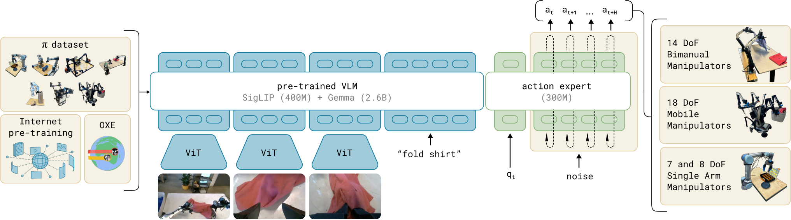
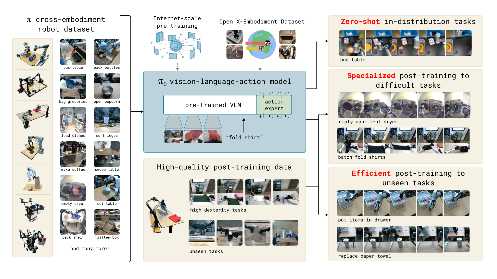

2024 · PHYSICAL INTELLIGENCE
π0 精读
1. 问题：把语义先验接到连续动作
π0研究的是：如何保留视觉语言预训练的知识，同时高效生成精细的连续动作块。原始OpenVLA等离散自回归方案有分桶和串行解码成本；这不代表自回归模型不能表达多模态，也不代表所有离散动作方法都不能输出chunk。π0选择VLM权重 + 独立动作专家 + flow matching，把视觉语义和连续动作分布放进一个有结构的注意力系统。
2. 架构精读
2.1 两组权重，通过有掩码的注意力交互
原始模型以约3B的PaliGemma为主干，配约300M动作专家。图像/语言token走VLM权重，状态和带噪动作token走专家权重；不同组通过attention接口交互，哪些token可见由mask决定，并非所有位置无条件双向可见。这种设计受Transfusion启发，但不是稀疏路由MoE的同义词，也不是简单在VLM最后接一个MLP。

来源：π0 论文 Fig. 3 · © Physical Intelligence
2.2 Flow matching：训练配对直线，不等于推理轨迹必直
沿原论文的时间方向，令噪声为 $\epsilon$、数据动作为 $A$，条件路径为 $A^\tau=(1-\tau)\epsilon+\tau A$，速度目标为 $A-\epsilon$。网络学习 $v_\theta(A^\tau,\tau,o)$，损失为 $\mathbb E\|v_\theta-(A-\epsilon)\|^2$。推理从 $\tau=0$ 的噪声积分到 $\tau=1$ 的动作，可用Euler更新 $A^{\tau+\Delta}=A^\tau+\Delta v_\theta(A^\tau,\tau,o)$。
直线说的是训练时选定的噪声—数据配对路径。 学到的条件向量场仍随位置和时间变化，采样轨迹可以弯曲；生成空间中的路径也不是末端的物理运动路径。因此不再用“光点沿直线移动”来冒充π0推理。原论文采用偏向更噪时间段的采样分布；复现时还要核对代码是否用了相反的时间记号和相应积分符号。
2.3 动作块与50Hz的正确含义
原论文使用 $H=50$ 的动作块。若动作点以50Hz执行，它覆盖约1秒；这不意味着每次都开环执行满1秒，更不意味着模型推理为50Hz。重规划调用率、实际执行前缀和低层伺服频率应分别报告。RTC、重叠平均与异步调度是额外的执行设计，不能仅靠插值推导出闭环稳定。
来源：π0 官方博客 · © Physical Intelligence · 原始文件
点击播放，可暂停、拖动进度或全屏；本站不自动播放，也不额外加速。
3. 训练与数据
本页采用论文v3口径：自采数据覆盖7种机器人构型、68项任务，并混合OXE数据；论文描述约10,000小时演示规模。官方博客采用的平台统计口径与论文并不完全相同，数字比较应先固定版本。互联网视觉语言知识主要来自VLM初始化，不要把π0的机器人训练阶段与π0.5显式混入web任务的共训配方混为一谈。

来源：π0 论文 · © Physical Intelligence
4. 结果与消融
阅读原论文VI节时分开看：预训练基座的直接任务表现、语言跟随、新技能微调，以及复杂多阶段任务。无VLM初始化的π0-small消融用于研究预训练先验的作用，但网络结构也有差别，不能解释成“参数越大必然更好”。同样，基座结果、任务后训练结果和后来的openpi基准checkpoint不可混用。
5. 研究者注记
值得复用的是模块接口，而不是一个万能叙事：分别消融VLM先验、动作专家容量、生成步数与执行视界。Flow与diffusion可通过特定路径/参数化联系，不能按“直线/弯曲、确定/随机”普遍二分。实验记录里同时写动作Hz、调用延迟、重规划率与真实执行时间戳，才能定位加速到底改善了哪一层。
6. Token接口与注意力：谁能看见谁？
这里的token首先是序列位置，不必是词表里的整数。一个连续动作向量先经投影，就能占据一个动作token位置；最后再把该位置的隐藏向量投影回动作维。用50个动作token表示50个控制点，与把每个关节离散成词表项，是不同的动作表示。
按原论文附录A-B，可把序列分成视觉/语言块 $P$、状态块 $S$、带噪动作块 $X$。下表行是query、列是key/value；“可见”包含块内双向关系。这是解释缓存与条件结构的最小接口图，不是新增网络。
| Query → Key/Value | $P$ 图像/语言 | $S$ 状态 | $X$ 带噪动作 |
|---|---|---|---|
| $P$ | 可见 | 不可见 | 不可见 |
| $S$ | 可见 | 可见 | 不可见 |
| $X$ | 可见 | 可见 | 可见 |
每次积分改变 $X$，但不改变同一调用中的 $P,S$。由于前两块不读取 $X$，其表示不被当前带噪动作污染，相应K/V可复用。动作块内部双向注意力允许未来动作位置共同参与生成；它看的是同一生成状态中的其他带噪位置，不是把测试时的真值未来动作偷偷提供给模型。
训练时梯度是否穿过主干是另一个问题。注意力的可见性mask、padding mask、loss mask和stop-gradient各自控制不同对象。π0的块因果接口不能直接等同后来的Knowledge Insulation。原始接口见 π0附录A-B。
7. Flow matching推导：把论文与代码的时间方向对齐
给定一组噪声—数据配对，路径对生成时间求导就得到监督速度。平方损失的最优回归函数是当前带噪状态和条件下的目标速度期望：$v^*(x,\tau,o)=\mathbb E[A-\epsilon\mid x,\tau,o]$。同一个位置可能来自不同训练配对，所以学习到的是条件向量场，不能把某一对样本的直线硬套到全部推理路径。
| 约定 | 带噪状态与目标速度 | 采样方向 |
|---|---|---|
| π0论文：噪声在0 | $x_\tau=(1-\tau)\epsilon+\tau A$；$u=A-\epsilon$ | $\tau:0\to1$，正步长 |
| openpi：噪声在1 | $x_s=s\epsilon+(1-s)A$；$u=\epsilon-A$ | $s:1\to0$，负步长 |
取 $s=1-\tau$ 就能互相转换。不要只翻转插值公式，却保留原来的速度符号或步长；那会把积分推向相反方向。这里对代码的说明固定到 openpi 215abfb · pi0.py 的 compute_loss / sample_actions，不把未来main分支默认配置当作论文常量。
教学算例：两套方向给出同一更新
直观上，条件flow matching用“随机中间状态→应有速度”的监督来训练；ODE求解器则负责把局部预测串起来。网络误差与数值积分误差不同：增大模型不保证可无限减少积分步数，换高阶求解器也不保证修复错误的条件理解。
8. 从训练样本到一块动作的完整流程
一次训练更新
- 取多相机、指令、机器人状态和示范动作块；执行相应数据变换、归一化与缺失维处理。
- 采样与动作块同形的噪声和生成时间；选定一套一致的插值、速度目标与时间分布。
- 视觉/语言走VLM权重，状态/带噪动作走动作专家权重，按块mask交互。
- 从动作位置读出向量场，计算有效动作元素上的回归损失，按训练方案更新参数。
一次部署调用
- 对这次固定条件建立前缀K/V；初始化整个动作块为高斯噪声。
- 循环 $K$ 次：编码当前带噪动作与生成时间，运行专家，按求解器更新。
- 完成后再反归一化、选择有效维与执行前缀；生成时间推进不是机器人已经运动。
- 按执行协议重新观测并调用。不要在未验证的控制接口上直接下发学习策略输出。
可用 $T_{\rm call}\approx T_{\rm encode}+K T_{\rm expert}+T_{\rm I/O}$ 粗分成本。缓存把重复视觉编码变成一次，不会把专家迭代也变成一次。任务循环还要考虑采集、网络、队列、反归一化和底层控制；用单层forward测速不能代替端到端延迟。
9. 真机接口：形状对了，语义也可能错
教学设定： 假设双臂各6个关节加1个夹爪通道，每个动作点共14维，50步块就是 $50\times14$ 个连续值。这只是说明张量含义，不表示所有π0平台固定采用14维。统一padding到某个最大维度，也不能消除左右臂顺序、角度单位或夹爪正负方向的差异。
| 接口问题 | 可能出现的现象 | 先做的离线检查 |
|---|---|---|
| 绝对位置 / 增量混淆 | 尺度似乎正常，执行却持续漂移 | 用同一日志还原目标序列，核对参考坐标与累积规则 |
| 关节 / 末端动作混淆 | 数组维数接近，却不能用于同一控制器 | 检查控制模式与旋转表示，不用猜测或直接试机 |
| 归一化统计不匹配 | 预测范围异常或特定维偏置很大 | 对已知示范做normalize→inverse往返测试 |
| 夹爪 / 本体通道顺序错误 | 动作语义被交换，语言理解看似失效 | 打印字段名映射，与数据和硬件契约逐项对照 |
50Hz对应20ms控制点间隔；若另一个系统用相同50步却以25Hz执行，覆盖的物理时间就不同。只有数据重采样、动作定义与低层控制都一致时，才能讨论同一“chunk长度”的迁移。
10. 研究设计：把语义能力、生成能力和执行能力拆开
研究建议。 三组实验分别回答不同问题：①更换指令但保持物体/场景相近，检查语义条件；②保持条件与数据，扫描积分步数/专家容量，检查连续生成；③保持checkpoint和采样器，改变执行前缀与调度，检查系统闭环。将三组变量一起改动，通常无法知道收益来自哪里。
再做一个低成本诊断：固定观测，多次采样动作块并画出有效动作维的分布，检查是否存在离群、归一化错误或不合理的模式切换。它可以帮助发现接口问题，但不包含动作执行后的状态变化，不能替代闭环成功率。
读完应能自己解释：为什么动作token不必离散？为什么前缀K/V能缓存？论文和代码速度符号为何相反却都正确？一个50步动作块与模型调用频率是什么关系？这四个接口问题比背住“3B+300M”更有复现价值。
11. 概率路径统一视角：flow与diffusion到底差在哪里
把噪声到数据的路径一般地写成 $x_t=\alpha(t)A+\sigma(t)\epsilon$。对一组已知配对求导，速度目标为 $u_t=\dot\alpha(t)A+\dot\sigma(t)\epsilon$。π0使用的线性插值只是其中一种选择；diffusion相关路径也可以用相应概率流或向量场描述。因此“flow必为直线、diffusion必为随机弯路”并不是严格的分类。
需要区分四件事：选什么概率路径，网络预测噪声/干净样本/速度中的哪一种，训练时如何给不同时间加权，以及推理采用什么求解器。两份代码都把函数叫 denoise，也可能在这四处有不同；反过来名字不同的代码可能只是时间反向或参数化变换。
为什么配对目标简单，学到的场仍可能复杂？
训练时知道配对 $(A,\epsilon)$，目标速度容易构造；部署时只知道当前 $x_t$ 和观察。多个配对可能经过附近位置，最优平方回归需要整合它们的条件分布。训练的“直线插值”不是为每个推理样本预先选好一条从噪声到正确动作的直线，终点也没有通过标签直接传给部署模型。
数值求解器反复查询这个场，才把噪声分布搬向动作分布。即使给定噪声后的ODE映射是确定的，噪声本身仍构成随机输入，多模态并不会因此消失。是否需要额外随机采样，应由路径、模型和任务实验决定。
这个视角来自 Flow Matching原论文的条件路径框架，本页将其用于整理动作策略。它不是证明π0在所有数据和求解预算上优于DP；公平比较仍需固定数据、条件编码、动作空间与端到端评测。
12. 三种时间不要混：物理时刻、动作位置与生成坐标
一次推理同时涉及物理观察时刻 $t_{\rm obs}$、动作块内位置 $j$，以及生成时间 $\tau$。前者说明传感器什么时候看到环境，第二个说明这个动作计划用于第几个控制点，第三个说明动作张量离噪声/数据端有多远。把三者都记为 $t$，很容易把训练目标、位置编码和执行频率拼错。
原π0实现把生成时间做正弦编码，与已投影的带噪动作特征拼接后经过MLP。可概括为 $h_j=\operatorname{MLP}([W_a a_j^\tau;\phi(\tau)])$。对同一个样本，$\phi(\tau)$ 在动作位置维广播；动作在序列中的位置则通过另一套位置机制表达。这不意味着所有动作点代表同一个真实时刻。
| 量 | 同一次生成中的变化方式 | 错误混用的后果 |
|---|---|---|
| 观察物理时间 | 本次条件固定；下一轮采集才变 | 缓存旧观察却声称接入新反馈 |
| 动作位置 | 沿50步等动作序列变化 | 把步号当噪声级，破坏块内顺序 |
| 生成时间 | 每次ODE更新变化 | 模型读到错误噪声阶段，速度场符号或尺度错 |
检查batch时，生成时间通常先按样本采样，再广播到该样本的动作位置；若把一个batch的时间广播错到另一个batch，张量可能仍能计算，却在学习矛盾监督。至少用不同时间的两个样本做形状与数值检查，不要只用batch=1测试。
这里描述的是 固定版本pi0.py中的非pi05分支。后续π0.5分支把时间条件用于adaRMS，不能因为共享一个Python类就把两种注入方式写成相同架构。
13. 两组权重如何交互：从Q/K/V接口理解动作专家
VLM隐藏宽度与动作专家隐藏宽度可以不同，但在共享attention接口中，参与点积的query/key维度必须兼容。抽象地，主干特征 $H_v$ 经本组投影得到 $K_v,V_v$，动作特征 $H_a$ 经专家投影得到 $Q_a,K_a,V_a$；动作query再按mask读取两组key/value。投影把不同隐藏宽度接到相容的head空间，而不是要求所有MLP都同宽。
来源：π0 论文 Fig. 3 · © Physical Intelligence。沿用原文件，未重绘。
这样既利用大主干的语义表示，又让需要反复运行的动作部分相对轻量。它不同于按输入内容稀疏挑选若干专家的常见MoE：这里token类型与权重路径有结构化关系。也不同于冻结VLM后只接一个线性回归头，因为动作位置在多层中持续读取条件并协调时间结构。
接口兼容性比参数量更具体
替换主干时需要检查层数对应、head配置、K/V投影、位置编码、精度和缓存格式。两个模型都叫Transformer，并不保证权重可以直接拼接。即使完成维度适配，新主干的特征分布也可能与已训练专家不兼容，仍需相应训练或校准。
建议先画出一层的query来源、key/value来源和mask，再看整网。对动作query而言“能读视觉token”只是计算路径成立；它是否把任务语言真正用在动作上，还要靠控制指令的对照实验，而非仅凭attention图宣布模型理解了语义。
14. 训练哪些参数：冻结、全量微调与KI不是同一件事
原π0在动作损失下训练VLM与动作专家时，条件特征可以接收动作目标传来的梯度；后来的Knowledge Insulation则阻断特定连续目标到主干的梯度。冻结整个主干、只训练低秩适配、或按目标隔离梯度，是三种不同的可训练参数与优化路径设置。
| 方案 | 动作损失能改变什么 | 主要研究问题 |
|---|---|---|
| 冻结条件主干 | 专家及指定的接口层 | 固定语义特征是否足以支持新动作 |
| 全量联合训练 | 允许的主干与专家参数 | 任务适配收益与语义遗忘的权衡 |
| 指定适配参数 | 明确选中的适配器/投影及专家 | 可训练容量与预算的取舍 |
| KI式目标隔离 | 连续分支不回传主干，其他目标仍可训练主干 | 不同监督目标的梯度干扰 |
“参数冻结”不必然等于前向不计算；主干仍可能需要每次观察编码。“少量可训练参数”也不等于同倍数减少推理成本。比较时分别报告总参数、可训练参数、前向计算和训练显存，避免用一个数字代替四种预算。
动作专家通常包含新初始化部分。训练早期的特征与梯度尺度可能不匹配，因此学习率、优化器状态、梯度裁剪和训练阶段都影响结果。若实验同时改变冻结范围和学习率，不能把全部差异归给冻结策略。
一个有用检查是按模块记录梯度范数，并确认“应当冻结”的参数确实没有更新。但梯度范数大不直接等于有害，梯度余弦为负也不自动证明泛化下降；它们是诊断信号，需要与语言跟随及闭环任务结果结合。
15. 多模态观察契约：缺相机、空提示和padding如何处理
训练时的多相机顺序、图像预处理、语言模板与状态语义共同定义输入契约。部署收到两张分辨率相同的图片，并不代表它们可以交换前视/腕视位置；状态向量维数相同，也不代表左右臂、夹爪与底盘通道的语义相同。
缺失视角需要明确的可见性处理。在公开实现中，图像token带相应mask；用一张全黑图替代缺相机而不设置mask，可能让模型把“真实黑色画面”当作有效条件。反过来，正确mask的含义只是避免读取该位置，不保证模型在缺失关键信息时仍有足够能力完成任务。
为什么padding也要进入复现记录？
统一动作最大维度可以方便混合本体，但无效维、状态padding、语言padding与真实零值不是同一概念。某个有效关节角恰为0，不能因为数值等于0就被mask掉。应使用显式schema或有效维定义，而不是根据数值猜哪些通道存在。
还要核对语言是否允许为空、默认指令由谁注入、状态是否已被token化，以及图像resize是否保留原始比例。这些操作有时在模型外部的transform管线中完成，只看网络forward签名会漏掉。固定版本入口包括 embed_prefix / embed_suffix 与 输入输出transforms。
离线验证建议： 构造“正常观察、缺一路相机、空提示、不同有效动作维”四种合成schema，仅验证处理行为、mask和形状，不把随便补出的图像下发真机。策略面对信息不足时应该如何回退，是系统协议问题，不应交由padding技巧默默决定。
16. 相对动作到底相对谁：锚定当前状态还是逐步累积
“delta action”至少有两种常见语义：未来每个目标都减去本次观察状态，或者相邻动作点彼此作差。它们的张量形状一样，但逆变换完全不同。前者用同一个状态锚点加回每个未来目标；后者需要沿时间累积，不能只做一次广播加法。
openpi的DeltaActions / AbsoluteActions 在指定mask维上，使用状态锚定的变换。这是该实现的接口定义，不应只根据“delta”名字替换成另一种常见控制约定。夹爪等通道是否参与变换，也由mask决定；不能未经核对就把整条向量一起减状态。
归一化顺序同样要一致。通常先按目标语义转成相对量，再拟合/应用其统计；如果训练对绝对动作拟合统计，部署却把它套在相对动作上，输出范围可能看起来不大，却代表错误物理量。输入与输出transform的复合顺序也应互为对应，而不是只确认每个单独函数可运行。
块切换时，锚点更新到新观察状态；若缓存旧chunk或把多个chunk直接拼接，必须知道每个块属于哪个锚点。这个问题在异步执行中尤其重要：把过期块的delta重新相对当前状态解释，会改变原计划的绝对目标。
17. 从基座到任务模型：微调到底适配了哪种分布
基座直接提示、任务微调和多任务后训练要分别评测。针对一个任务收集的高质量演示，可能同时改变物体、场景、相机、动作统计与操作者风格；微调后变好不自动证明模型学到了新的操作原理，也可能只是适配了接口或背景分布。
一个清楚的数据设计应包含训练演示、模型选择用的验证场景、最终测试场景，以及额外的语言/物体变化测试。少数据时，训练loss下降很快而闭环泛化不升并不罕见；应先看是否存在近重复episode、单一初始姿态或只覆盖成功主路径而没有恢复状态。
比较微调方法要匹配什么？
- 同一基座权重与同一输入输出契约，避免把不同预训练模型当成同一个起点。
- 同一训练/验证划分，记录实际样本重复次数与有效训练步数。
- 明确专家、主干和接口层哪些可训练；独立选择与记录相应超参数。
- 任务效果之外，检查原有语言跟随与旧任务是否回退。
若换了归一化统计，尤其要检查夹爪和常量维的处理。使用新任务统计可能帮助局部适配，也可能让旧任务不再使用相同数值契约；混合新旧数据时不能只保存一个没有来源说明的统计文件。
最后把“微调数据更多”与“后训练目标更好”分开。若一个方法额外使用人工纠正或更优示范，成本与信息都变了；应增加共享新增数据的BC对照，再讨论优化方法本身的增益。
18. 缓存收益手算：一次调用快了多少，闭环又快了多少
把一次调用分为条件编码、动作专家迭代与I/O。若没有缓存，某个朴素实现可能在每次积分重复条件编码；缓存则把不依赖当前带噪动作的部分复用。这个简化模型能解释优化方向，但实际内核融合、显存带宽与批量仍需测量。
端到端调用还包含图像采集、预处理、设备同步、传输与反归一化。GPU工作通常异步排队，若在没有正确同步的位置计时，测到的可能只是提交时间。应分别记录冷启动/编译与稳态，并说明输入相机数、精度、batch和采样步数。
再考虑执行窗口：模型一次生成50个控制点，可以只执行其中一段；模型调用频率与50Hz动作点频率不是同一条时钟。同步等待时，低层控制器可能继续保持或插值，但这不意味着策略获得了新反馈。异步能重叠部分计算和执行，也不直接改变单次专家forward速度。
建议至少给出两类图：分项调用时延，以及真实任务的效果—时延/吞吐曲线。若优化只减少编码却增加了专家调用次数，总计算未必下降；若平均延迟下降但p99更差，队列耗尽风险还可能上升。
19. 复现前的单元测试：不用机器人也能排掉哪些错误
先用一个已知常向量场测试ODE求解器：若速度恒为 $c$、积分区间长度为1，结果应为初值加 $c$；反向时间约定则用负步长和相应反号速度，得到同一终点。它只能验证积分符号和循环边界，不验证神经网络能学会真实动作分布。
| 检查 | 构造方式 | 应验证的性质 |
|---|---|---|
| 时间方向 | 已知终点配对或常速度场 | 插值、目标速度与步长成套一致 |
| mask | 小型前缀/状态/动作序列 | 不允许前缀依赖当前带噪动作；有效位置不丢失 |
| 缓存等价性 | 相同观察、噪声与生成时间 | 全量计算与缓存路径在合理数值容差内一致 |
| 动作变换 | 真实示范和边界样本 | normalize及delta逆变换回到同一物理目标 |
缓存对照应关闭不必要随机性，使用相同精度和位置编码；低精度下只要求合理容差，不应无条件要求逐bit一致。若每次更新都把旧动作的K/V接到缓存末尾，还要检查缓存长度是否随生成步数错误增长。
再做单batch拟合与输入扰动检查：固定动作和噪声，改变语言/图像条件，确认梯度通路和输出响应；输出响应不是语义正确性的证据，但完全无响应足以提示mask、预处理或条件接入可能出错。
这些检查的意义是建立可信的实现底座。只有之后在明确任务与协议上的闭环评测，才能支持“复现了π0的某种能力”，不应把算术测试通过写成模型性能验证通过。
20. 可复现课题：少步生成会不会损伤语言条件的作用
研究假设： 积分步数减少可能首先影响复杂条件下的动作精度或模式选择，而不是在所有指令上均匀下降。为了分开语义与运动，可在相近场景中改变对象指代、左右关系和目标容器，同时控制真实可行动作集合。
| 部分 | 建议设计 |
|---|---|
| 对照组 | 同一checkpoint，两档以上采样预算；另外保留默认步数基线 |
| 条件分层 | 熟悉指令、同义改写、关系指令与明确留出的对象组合分别统计 |
| 诊断上界 | 在允许的任务里提供正确子任务作诊断，但不混入自主成绩 |
| 指标 | 选错对象、接触/放置误差、整任务成功、调用时延与观察年龄 |
| 预算记录 | 每条任务的模型调用总数、积分总步数和实际GPU时间 |
如果少步模型选对对象但动作变粗，主要证据指向连续生成精度；如果动作本身可行却经常选错对象，需要进一步检查条件编码与向量场是否在有限求解预算下保留语义。不能只用总成功率把两类错误压成一个数字。
对失败视频同时保存语言、观察、初始噪声、每轮执行前缀与模型版本。只展示最流畅的一次组装，无法回答少步采样是否稳定。若任务初始状态不同或人工提示数量不一致，先修正协议，再讨论方法差异。
这是研究方案而非本站实验结论。应先用离线与仿真建立诊断，真机评测沿用已验证的安全接口；最终报告条件性收益和失败边界，不用单个最优视频宣布通用加速。
参考：π0论文v3（IV、V、附录B/D） · 官方博客 · openpi。